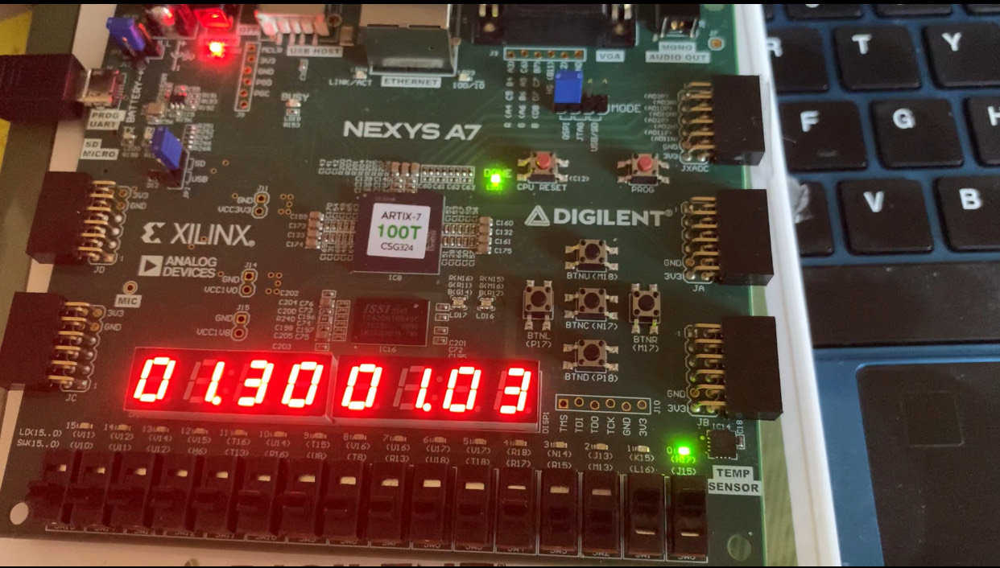
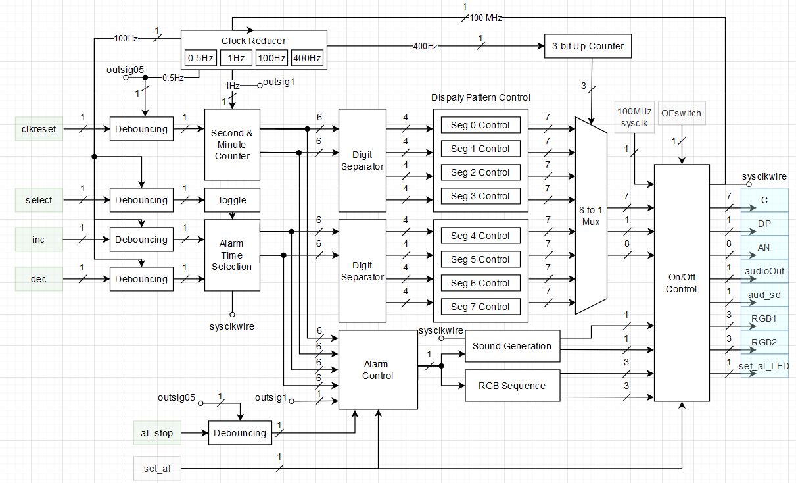
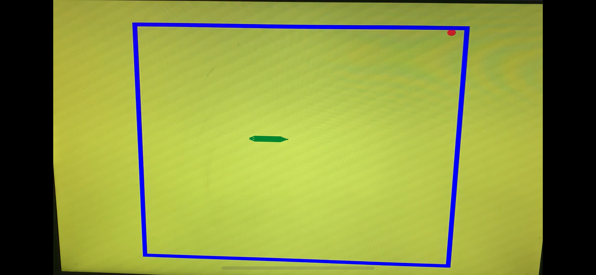
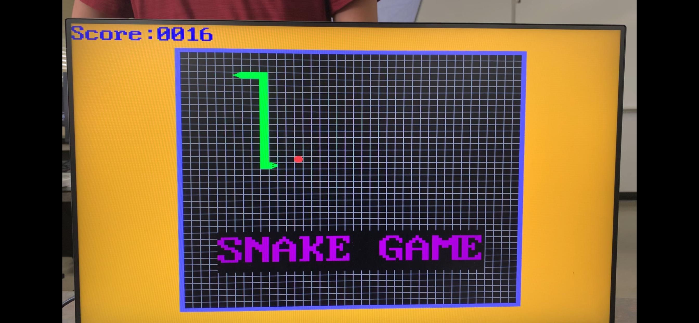

The alarm clock project takes advantage of NEXYS A7 development board's 7-segment displays as well as its mono audio output. The user can set a time using the left set of 7-segment displays and the five black buttons. The top and bottom buttons increase and decrease the set time and the left and right buttons can be used to select the minute and second sections. The clock is run by the onboard 100MHz oscillators and is programed to increase the displayed number every second. When the set time matches the clock time, the mono audio port will output a programmed sound and the rgb leds will ligth up for 30 seconds. Unless the user the stop the alarm using the middle button, the alarm will sound until completion.

The verilog projects are complied in vivado which translates the verilog code into hardware design which can be implemented on the FPGA. I use the tool's debugging features and simulation features to test my verilog code before implementation which streamlines my project development process. Although the tool's complie time is longer than a normal complier being able to interact with the code on the development code gives me a better understanding of my design.
I also used block diagrams to expand my project ideas to distinguishable blocks. An example for the alarm clock project is shown below.

Below is the link to the code and project summary for the above project. Please note that the project files are compiled in Vivado.
The snake game project utilizes the Nexy A7 development board's VGA output to an external display. For this project, I have a verilog module that handles the VGA output such as the screen refresh rate, pixel position and pixel color. This module act as a driver to display to the screen but modifications were necessary to adapt the module to my specific development board. This means that it is easy to mess up a parameter and stop the VGA output

The project is a replication of the classic snake game but the head and tail of the snake have different sprites compared to the body. Since these sprites are directional, I had to relate the snake's direction to the sprite that needs to be displayed. The buttons on the development board are used to control the direction of the snake. The middle button served as a reset button. The sprites are displayed via a masking method and the all sprites on the screen have a hierarchy. The blue walls limit the playable area with a 40x40 grid. The red apple changes location randomly when eaten. Since randomness is not avaliable on a FPGA, a fast clock and counter is used to simulate randomness.

The project is expanded to record and display the socre, the game logo, a vitory screen and a lose screen. The game will also show a set of how to play text for a set amount of time before disappering. The game also had audio feedback via a background muisc and a beep when the snake eats the apple. The audio also changes to a win song and a lose song if those conditions are triggered. The movement of the snake is linked to the screen's refresh rate and moves a certain amount of pixel at a time. In the finialized picture the hierarchy of the sprites are seen clearly. For example, the blue border is displayed over the gird and the snake body is displayed over both the grid, the black background and the logo text.
Below is the link to the code and project summary for the above project. Please note that the project files are compiled in Vivado.